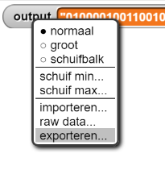
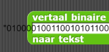

Binaire reeksen
Op deze pagina, ga je leren over hoe informatie wordt weergegeven in computers als reeksen van bits.
Welkom bij de schoonheid ... "
-tekst gebruikt eigenlijk 44 bytes.
Tot nu toe hebben we met kleine stukjes data gewerkt, van Boolean waardes (één bit) tot tekens (acht
bits). Maar sommige informatie op je computer of smartphone is natuurlijk veel groter dan dat. Om te
beginnen worden tekens over het algemeen niet één voor één gebruikt; ze worden gebruikt in
tekstreeksen zoals " Welkom bij de schoonheid en vreugde van programmeren. "
Deze 43 tekens beslaan 43 bytes computergeheugen. Maar de echte kampioenen van geheugengebruik
zijn mediabestanden: afbeeldingen, geluid (meestal muziek) en video.
Als we in de bits van het geheugen kunnen kijken, zou een gedeelte van het geheugen er ongeveer zo uitzien:
01000001001000000111001101101101011000010111001001110100001000000111000001101000011011110110111001100101001011000010000001101100011010010110101101100101001000000111100101101111011101010111001000100000011011000110000101110000011101000110111101110000001000000110111101110010001000000110010001100101011100110110101101110100011011110111000000100000011000110110111101101101011100000111010101110100011001010111001000101100001000000110001101100001011011100
Een binaire reeks (ookwel een bitstream genoemd) is een reeks nullen en enen.
Dat toont slechts 449 bits. Een mobiele telefoon van 16 GB heeft zestien gigabyte (ongeveer 16 miljard bytes) aan geheugen, waar elke elke byte weer bevat 8 bits. Dat zijn 128.000.000.000 bits. Gedrukt op papier als enen en nullen, zou het geheugen van de 16 GB telefoon bijna 40.000.000 pagina's in beslag nemen! De opgeslagen informatie, of het nu een SMS-bericht, een foto, een liedje, een computerprogramma of een lijst met telefoonnummers is, het ziet er allemaal precies hetzelfde uit: een reeks bits die Aan of Uit zijn (1 of 0).
Groottes
Hier zijn een paar ruwe voorbeelden van hoeveel geheugen nodig is voor bepaalde gegevens:
| naam | hoeveelheid | voorbeeld |
|---|---|---|
| bit | 1 of 0 | 1 |
| byte | 8 bits | 11011001 |
| kilobyte | 210 (1.024) bytes | een aantal alinea's |
| megabyte | 220 (1.048.576) bytes | ongeveer 1 boek |
| gigabyte | 230 (1.073.741.824) bytes | iets meer dan 1 CD |
| terabyte | 240 (1.099.511.627.776) bytes | ongeveer 1.500 CDs |
| petabyte | 250 (1.125.899.906.842.624) bytes | ongeveer 20 miljoen kasten met tekst |
| exabyte | 260 (1.152.921.504.606.846.976) bytes | ongeveer 20% van alle woorden ooit uitgesproken |
In 2020, is het gebruikelijk om een terabyte-geheugenschijf op je bureau te hebben. Webservices verwerken petabytes of exabytes aan gegevens.
Waar komen deze voorvoegsels zoals "tera-" en "peta-" vandaan?
Wanneer we grote getallen schrijven, plaatsen we komma's om de drie cijfers (geteld vanaf de rechterkant). Elke groep van drie heeft een naam: duizend, miljoen, miljard, enzovoort. Het getal 1.234.567.890 wordt dus uitgesproken als "één miljard tweehonderdvierendertig miljoen vijfhonderdzevenenzestigduizend achthonderdnegentig". Die groepsnamen ("duizend" enzovoort) hebben ook voorvoegsels die worden gebruikt in metrische metingen:
| voorvoegsel | hoeveelheid | hoeveelheid als getal |
|---|---|---|
| kilo- | duizend | 1.000 |
| mega- | miljoen | 1.000.000 |
| giga- | miljard | 1.000.000.000 |
| tera- | biljoen (een miljoen miljoen) |
1.000.000.000.000 |
| peta- | biljard | 1.000.000.000.000.000 |
| exa- | triljoen (een miljard miljard) |
1.000.000.000.000.000.000 |
Cijfers voor getallen minder dan 1 (breuken) hebben ook voorvoegsels:
| voorvoegsel | hoeveelheid | hoeveelheid als breuk |
|---|---|---|
| milli- | duizendste | 1/1.000 |
| micro- | miljoenste | 1/1.000.000 |
| nano- | miljardste | 1/1.000.000.000 |
| pico- | biljoenste | 1/1.000.000.000.000 |
| femto- | biljardste | 1/1.000.000.000.000.000 |
| atto- | triljoenste | 1/1.000.000.000.000.000.000 |
De breuknamen worden gebruikt om tijden in de computer te meten, zoals een nanoseconde geheugentoegangstijd, of afstanden tussen draden op een chip, die worden gemeten in nanometers.
"Binaire reeks" is een brede categorie en vaak zijn er meerdere abstractieniveau's bovenop gebouwd. Je kan bijvoorbeeld een afbeelding in een email of een tekstbericht plaatsen, in dat geval bevat het bericht een afbeelding wat een soort bestand is, wat een bitstream is.
-

Bekijk de drie volgende blokken; deze zul je gebruiken om binaire reeksen te verkennen:
- Een resultaat-blok dat een stuk tekst als invoer neemt en het vertaalt naar een binaire
reeks:
- Een resultaat-blok dat een binaire reeks als invoer neemt en het naar tekst
vertaalt:
-
Je kan het tweede en derde invoerveld gebruiken om te bepalen waar het blok op een nieuwe regel begint en ook om de grootte van de getekende afbeelding te bepalen.Een commando-blok dat een binaire reeks als invoer neemt en er een zwart-wit plaatje mee tekent in het speelveld, met voor iedere 0 een witte pixel en voor iedere 1 een zwarte.
- Een resultaat-blok dat een stuk tekst als invoer neemt en het vertaalt naar een binaire
reeks:
- Het vertalen van een kort stukje tekst naar een binaire reeks.
- Vind de
maak (uitvoer) naar...instructie en verander de tekstinvoer naar een kort stukje tekst naar keuze. De gerapporteerde binaire reeks zal worden opgeslagen in de uitvoer variabele met de aanhalingstekens aan weerszijden.
- De uitvoer is te zien met een rechtermuisklik of Ctrl-klik op de UITVOER-kijker
rechtsboven in het speelveld en door daarna te klikken op "export..." zal de binaire
reeks als een tekstdocument gedownload worden. Kopieer enkel de binaire reeks uit het
bestand, niet de aanhalingstekens.

De aanhalingstekens vertellen aan Snap! dat de binaire reeks moet worden opgeslagen zoals hij ingevoerd is. Zonder de aanhalingstekens ziet Snap! de binaire reeks als een nummer, waardoor het de nullen aan het begin van de reeks zou verwijderen. Zonde die nullen verandert de betekenis van de binaire reeks. - Vind de
- Plak de binaire reeks van de uitvoer in het
vertaal binaire reeks naar tekstblok en voer het geheel uit (dit kan even duren).- Is de uitvoer gelijk aan je oorspronkelijke ingevoerde tekst? (Zo niet, dan kan het zijn dat je de aanhalingstekens hebt meegekopieerd of dat je een bit gaandeweg verloren bent.)
- Als je de tekst correct teruggekregen hebt, probeer dan wat aanpassingen te maken aan de
binaire reeks:
- Wat gebeurt er met de tekst als je één bit aanpast?
- En wat gebeurt er als je ergens midden in de reeks een bit toevoegt?
- En wat als je er een aan het begin toevoegt?
- Ga terug naar je geëxporteerde tekstbestand en kopieer je oorspronkelijke binaire reeks opnieuw
(zonder de aanhalingstekens). Plak dit vervolgens in het
vertaal binaire reeks naar zwart-witte afbeeldingblok en voer het uit. De kans is echter klein dat je iets zinvols ziet. Waarom is dit zo? - Plak de onderstaande binaire reeks in
vertaal binaire reeks naar zwart-witte afbeeldingmet 14 pixels ingesteld in het tweede invoerveld:
De uitvoer hiervan zou eruit moeten zien als het BJC-logo:00000110000000000001000110000000010000000000001100100110000011111111000001100111100000010010110011000111001111100000100110110000000001000000000000110000000000111000000011000100011000010000000100000110000110000000111111000000

- Wat gebeurt er als je diezelfde binaire reeks naar tekst vertaalt? Waarom denk je dat dit gebeurt?

Dus als afbeeldingen, muziek en woorden er allemaal hetzelfde uitzien (allemaal binaire reeksen) in het geheugen, hoe kan het dan dat de computer ze van elkaar kan onderscheiden? Stel dat je de binaire reeks 01000001 in het geheugen hebt: hoe zou deze dan geïnterpreteerd moeten worden? Als het nummer 65, of eerder de letter A? Of misschien een tint in donkerrood, of misschien zelfs nog iets anders..?
De betekenis van een binaire reeks hangt af van de context waarin hij gebruikt wordt. Maar wat is die "context" eigenlijk? En hoe weet een programmeertaal hoe hij een ingevoerd stuk tekst moet interpreteren? Of het een heel getal, een stukje tekst, een afbeelding of iets anders is, daar kan de taal achter komen dankzij een ander stukje van de reeks. Dat stukje vertelt het programma wat het data type van die reeks is.
In programmeertalen van hoger niveau, zit de code voor het soort data-type vast aan de waarde. Wanneer je variabelen aanmaakt in talen van lager niveau moet je zeggen welk type waarde het zal bevatten en het data-type zal dan vastzitten aan de variabele.
Snap! heeft voordelen die veel andere talen niet hebben en het is zeer waarschijnlijk dat je volgende informaticacursus een van deze andere talen zal gebruiken.
-
Een bepaald online verkoopbedrijf gebruikt 9-bit binaire reeksen om ieder product dat verkocht wordt te identificeren. Omdat verwacht wordt dat het het aantal verkochte producten zal stijgen, wil het bedrijf 10-bit binaire reeksen gaan gebruiken. Welke van de onderstaande stellingen hieronder beschrijven het beste de gevolgen van de 9-bit reeksen vervangen door 10-bit reeksen?Er kunnen twee producten meer geïdentificeerd worden.Bereken het aantal producten dat je kan identificeren voor en na de aanpassing.Er kunnen tien producten meer geïdentificeerd worden.Bereken het aantal producten dat je kan identificeren voor en na de aanpassing.Er kunnen twee keer zoveel producten geïdentificeerd worden.Correct. Eerst konden 29=512 producten geïdentificeerd worden en nu 210=1024 producten.Tien keer zoveel producten kunnen uniek geïdentificeerd worden.Bereken het aantal producten dat je kan identificeren voor en na de aanpassing.
- Kijk in de
vertaal tekst naar binaire reeksenvertaal binaire reeks naar tekst-resultaatblokken. Beschrijf hoe deze twee resultaatblokken werken. Er zijn meerdere zelf gemaakte blokken erin:pack 8-bit byteneemt een binaire reeks van 8 bits of minder als invoer en voegt genoeg nullen toe aan het begin om een hele byte te maken. Hoe wordt dit gebruikt?translate decimal to binaryneemt een decimale waarde (een normaal getal) als invoer en vertaalt het naar de binaire variant van dat getal. Dit blok gebruikt recursie. Waarom is recursie hier handig?translate text to Unicode listneemt een stukje tekst als invoer en geeft een lijst met Unicode-waardes van ieder karakter terug. Waarom is het handig om hier een lijst te gebruiken, denk je?